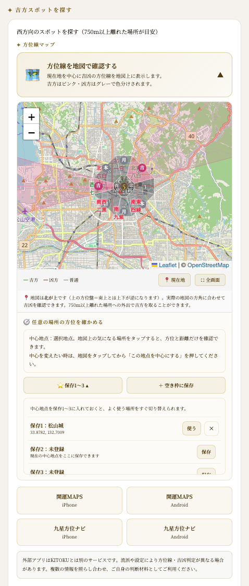
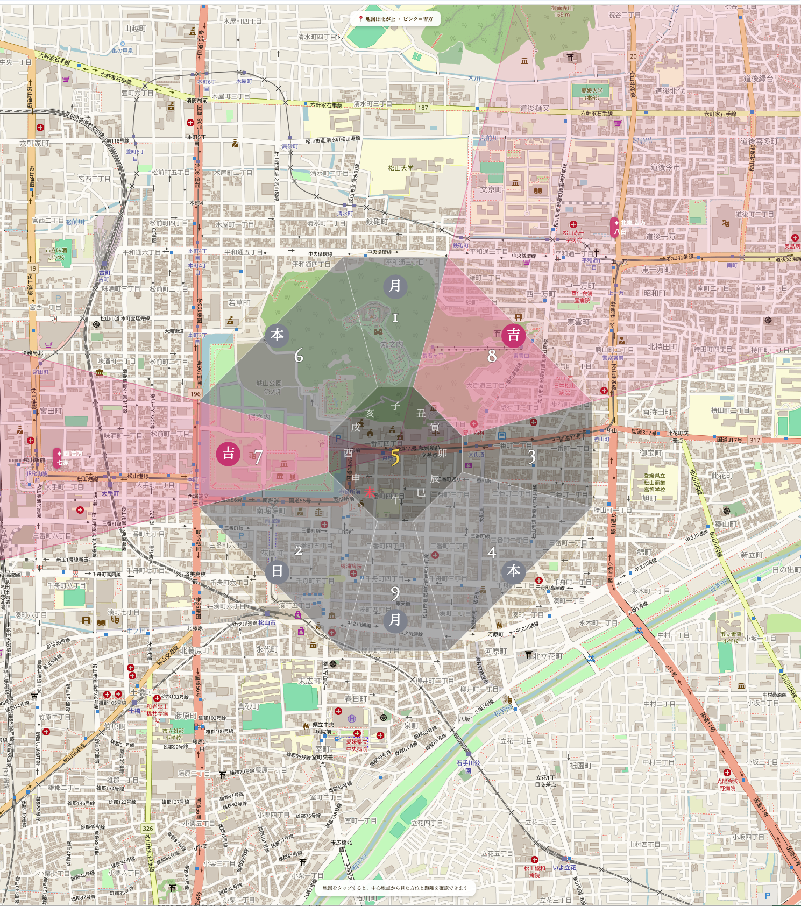
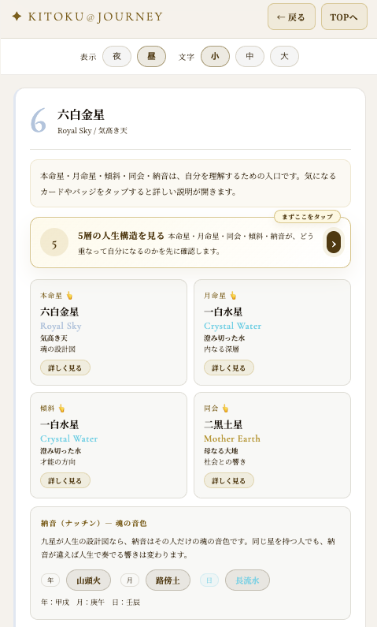
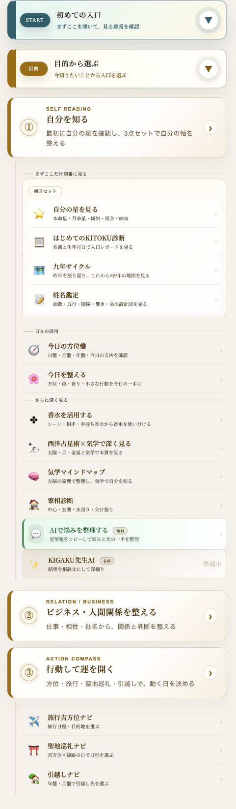
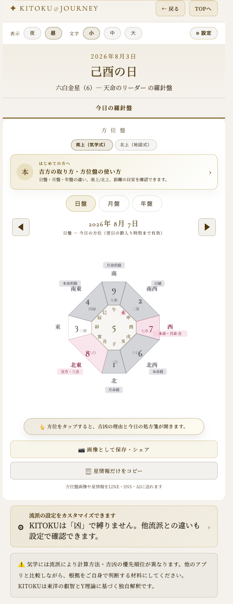

自宅から750mの
風水マップ
遠くへ行けなくても、運は動かせます。750mの外は「取りに行く運」。750mの内は、毎日浴びている環境の気です。この回では、自宅の周りを8方位で眺め、今いる場所を少しずつ整える方法を学びます。
家相や風水を怖がるためではありません。今ある環境を知り、できる範囲で整えるための地図です。引っ越せなくても、建て替えなくても、玄関を掃くところから運は動きます。
750mの内と外は、見るものが違う
日盤吉方では、自宅から750m以上離れた場所へ行って、温かいものを口にすることが基本でした。では750m以内は意味がないのか。そうではありません。750m以内は「取りに行く運」ではなく、「毎日浴びている運」として見ます。
750mの外は「取りに行く運」。750mの内は「毎日浴びている運」。どちらも同じくらい、人生を作っています。
750mは、歩いておよそ10分前後。近所のコンビニ、スーパー、駅、公園、学校、神社などが入る生活圏です。

750m以内を歩いても「吉方取り」にはなりません。吉方取りは750mより外へ出た時。内側は、取りに行くのではなく、整える領域です。
自宅の周りを8方位に分ける
まず、自宅を中心にして、周囲を北・北東・東・東南・南・南西・西・北西の8方位に分けます。地図は普段見慣れた北上表示で構いません。大切なのは、何となく歩いていた街を「方位の地図」として見直すことです。
| 方位 | 750m以内にあるものを書いてみる |
|---|---|
| 北 | 水辺・駅・静かな場所・暗い場所 |
| 北東 | 山・高台・神社仏閣・ホテル |
| 東 | 学校・電気店・音の出る場所 |
| 東南 | 花屋・ペットショップ・麺類の店 |
| 南 | 大学・本屋・美容院・明るい場所 |
| 南西 | スーパー・コンビニ・介護施設 |
| 西 | 飲食店・ATM・にぎやかな場所 |
| 北西 | 銀行・大きな建物・由緒ある場所 |

「なぜかこの道を通ると調子がいい」「この方角は落ち着く」。そう感じていたことを、方位と星の言葉で整理していきます。
建物には、星の性質がある
街にある建物やお店は、それぞれ九星の象意として見ることができます。自分の星に関係する場所が、どの方位にあるかを眺めると、生活の中でどんな気を浴びているかが見えてきます。
| 星 | 近所で見る場所の例 |
|---|---|
| 一白 | 魚屋・酒屋・ガソリンスタンド |
| 二黒 | スーパー・コンビニ・介護施設 |
| 三碧 | パチンコ屋・カラオケ店・幼稚園・小学校 |
| 四緑 | 花屋・ペットショップ・うどん屋・そば屋 |
| 六白 | 銀行・由緒ある社寺・大きな組織 |
| 七赤 | 飲食店・銀行ATM・楽しい場所 |
| 八白 | ホテル・山・高台・倉庫 |
| 九紫 | 大学・本屋・美容院・ドラッグストア |

該当する建物がない方位を「悪い」と決めつけません。今の生活圏には、まだ補える場所がある、という見方をします。
街が変わると、気の流れも変わる
新しい建物ができる、古い店が閉まる、道路が整う。自宅から750m以内の変化は、毎日浴びる環境の気を少しずつ動かします。新築や改装の影響は、目安として数年単位で見ます。
大学・本屋・映画館・美容院など。東なら止まっていた課題が動き、南西なら生活の役割が広がり、東南なら可能性が広がる、と見ます。
スーパー・コンビニ・介護施設など。北西なら大きな支えになり、東南なら生活圏が広がり、南なら役割が見えやすくなります。
電気店・音楽・子どもに関係する場所。北なら絡まっていた問題がほどけ、南なら心が明るくなるきっかけになります。
何かが閉じた時は、同じ星の場所を別の方位で探してみます。失われたのではなく、整え直すきっかけとして扱います。
土地の形と、家の形をやさしく見る
風水では、東西南北の高低差や開け方を見ます。完璧な土地はほとんどありません。足りない場所を見つけて、少し補うための見方です。
| 方位 | 四神相応の考え方 | 補い方 |
|---|---|---|
| 東 | 青龍。低い川・道・学校 | 東の窓を開け、朝日と明るさを入れる |
| 南 | 朱雀。低く開けた場所 | 南に光、赤や紫の花を置く |
| 西 | 白虎。高い道・鉄道 | 西を整え、金属や大切な物を丁寧に扱う |
| 北 | 玄武。高い山・森・建物 | 暗くしすぎず、定期的に掃除する |
家の形は、張りがあれば力が出やすい場所、欠けがあれば補う場所として見ます。マンションは自分の部屋の間取りを基準にします。
階段や水回りなどの細かい凶相カタログは扱いません。初心者の目的は、不安になることではなく、整えられる場所を見つけることです。
完璧な土地はほとんどありません。今の家を少しずつ整える。その姿勢こそが、この回の中心です。
家の中で補える7つのこと
家を変えるとは、必ずしも大工事をすることではありません。掃く、明るくする、乾かす。小さな行動で、浴びている環境は変わります。
今日やる3つ
750m以内は「整える領域」。吉方取りは750mの外へ出る実践です。第6回の日盤吉方と混ぜず、内側と外側を使い分けます。


まとめ - 今いる場所から始める
家を建て替えなくていい。引っ越さなくていい。750mの内側は、今日、玄関を掃くところから変えられます。KITOKUは、その場所を指すだけ。歩くのはあなたです。